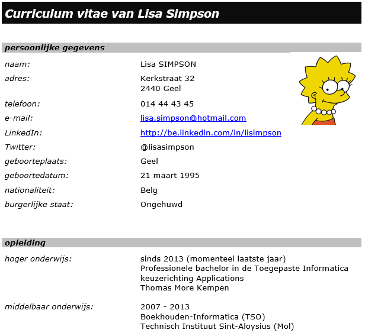

Toon hier je CV samen met een link om deze als bestand te kunnen downloaden.
Zorg voor een up-to-date CV dat gericht is op het IT werkveld.
Voorbeeld_CV-Lisa-Simpson: Het model dat werd gebruikt voor het Lisa-Simpsonvoorbeeld is erg basic en eenvoudig, maar wel overzichtelijk. Uiteraard mag je gerust zelf een aangepaste lay-out uitwerken. Kijk eventueel rond op het internet voor inspiratie, maar kopieer niet zomaar klakkeloos. Zorg er in elk geval voor dat je cv verzorgd en overzichtelijk is.
In het document Aandachtspunten voor CV vind je een aantal tips waar je best rekening mee houdt bij het opbouwen van je CV.
Vb:
Je kunt mijn CV downloaden via deze link
